| 日付 | 2016年2月21日（日） |
|---|---|
| 山域 | 高尾周辺 |
| メンバー | 家族（妻、長女・4歳、長男・2歳） |
| 山行形態 | 子連れ日帰り |
| アクセス | 車、ケーブルカー |
| ルート (Map) | ケーブルカー高尾山駅 (9:08) - 3号路 - (10:44) 高尾山 (11:45) - (12:56) ケーブルカー山頂駅 - (13:33) 1号路登山口 |
娘がリフトに乗りたいと言っていたため、リフトのある高尾山に行ってみる。
昨年末に行ったばかりだが、この時期は他に行く山があまりないため仕方がない。
息子を歩かせるにもちょうど良さそうな山だ。
いつも通り薬王院祈祷殿の駐車場に車を停めてリフト乗り場に向かう。
今日は雲が多く、あまり展望は期待できなさそうだ。
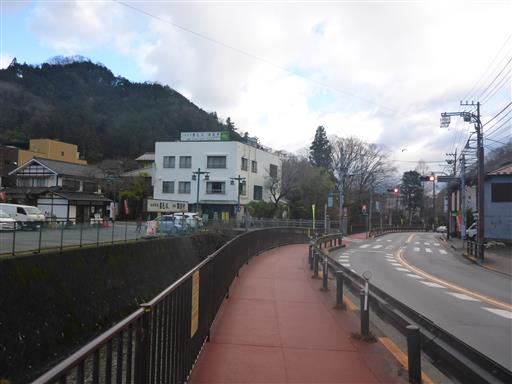
乗り場に着くと、なんとリフトは整備のため運休中。
事前に調べておけばよかった。
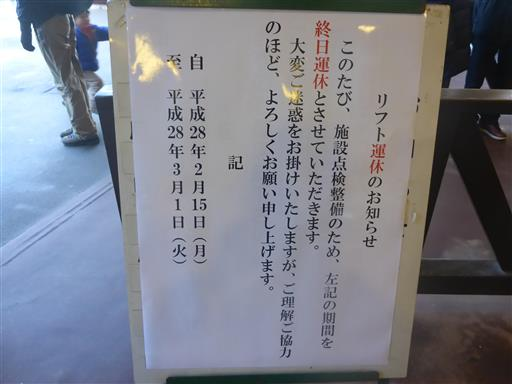
仕方なくケーブルカーで上まで行く。
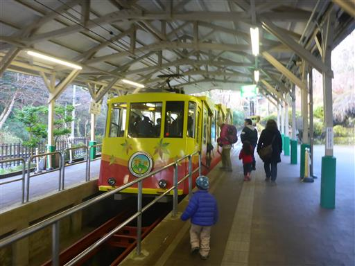
山頂駅に到着。標高450m。
トーマスの乗り物が置かれている。息子は最近トーマスに凝っている。
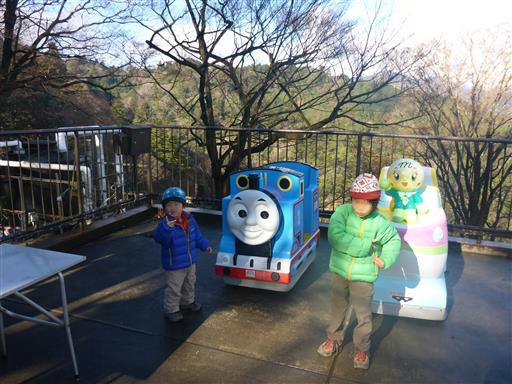
今回は久々に3号路を歩く。
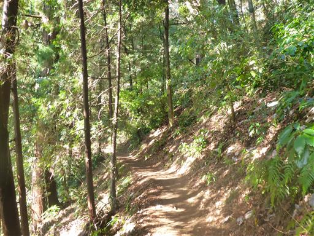
遠くに都心部のビル群が見える。
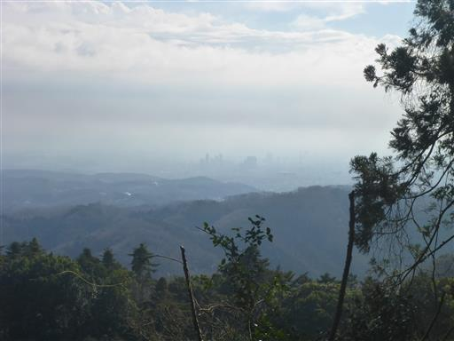
本日はキャリアを持って来ていない。息子は頑張って歩くしかない。
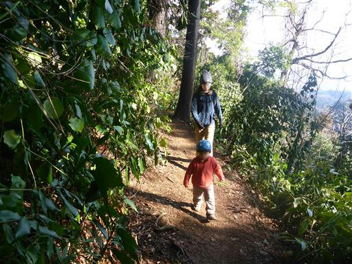
カゴノキが大きな赤い実をたくさん付けている。
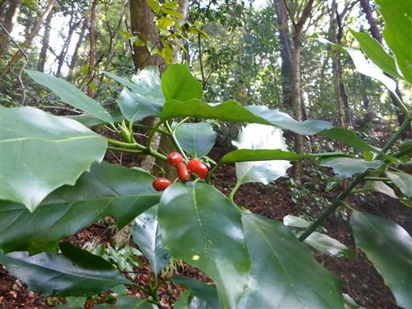
山の中腹に付けられた道なので、尾根と沢が交互に現れる。
娘は橋の数を数えながら歩いている。
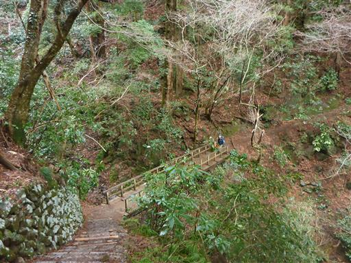
大きい道に合流する。
この道がどこに続いているのかよく知らないが、何人か歩いている人を見かける。
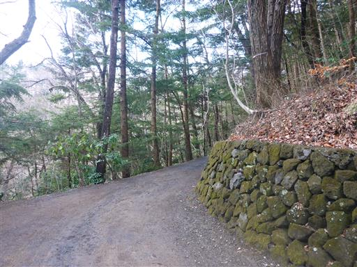
しばらく先に進むと1号路に合流する。
高尾山のメインロードで大勢の観光客が歩いている。
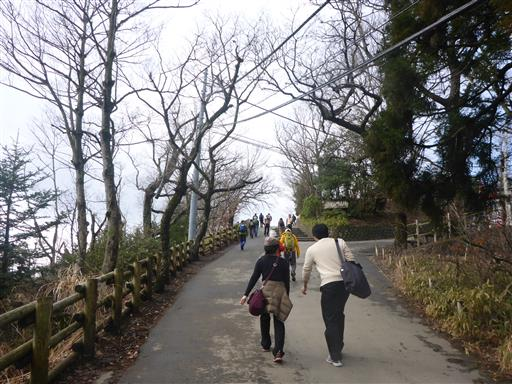
高尾山山頂に到着。標高599m。
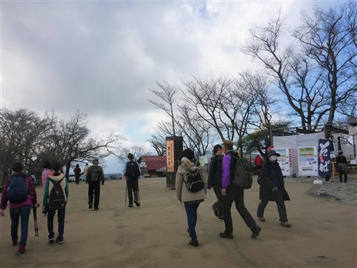
今回はキャリアを持ってこなかったため、その分荷物をたくさん持って来られる。
子連れ登山で初めて、山頂でカップラーメンを作ってみる。
娘は気に入ったようでおいしそうに食べている。
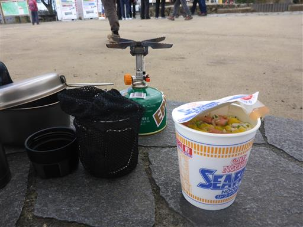
展望台からの景色。
最初は微かに富士山が見えたが、そのうち雲の中に消えてしまった。
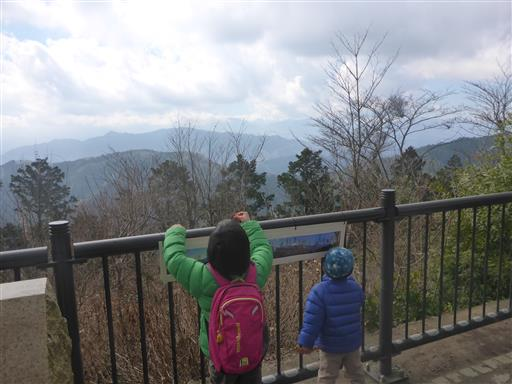
下山は3号路から合流した謎の大きい道を辿ってみる。
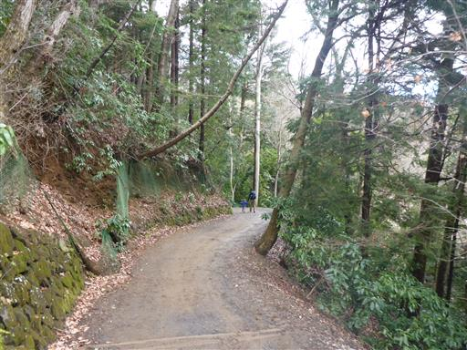
見知らぬ建物が建っている。
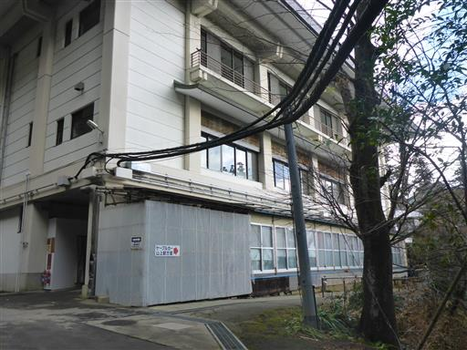
建物の脇の細い道を抜ける。高尾山にこんな道があるとは知らなかった。
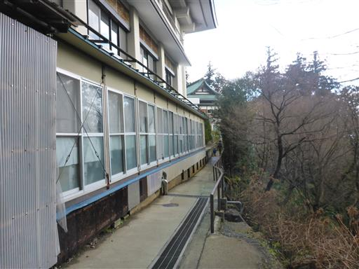
梅の花が咲いている。
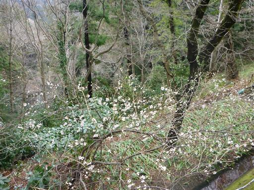
立派な杉の木。
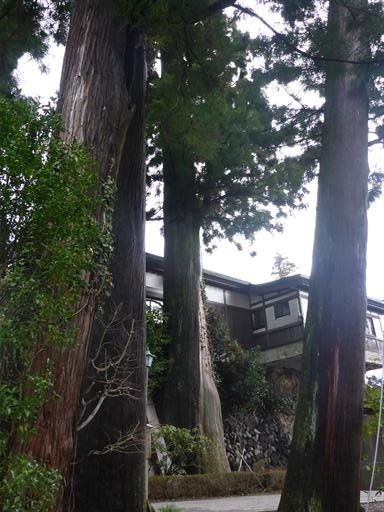
薬王院で1号路に合流する。
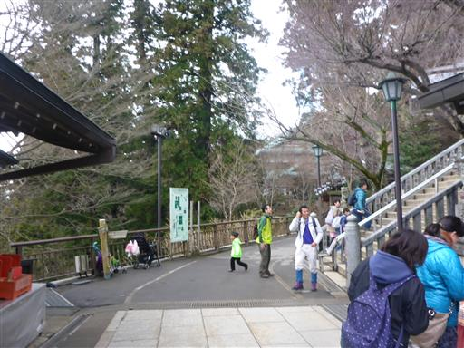
都心部はきれいに晴れている。
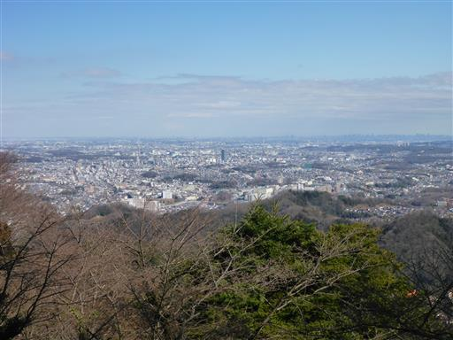
下りもケーブルカーに乗るのはもったいないので、1号路で下まで歩くことにする。
つまらない道だが、そこそこ歩いている人がいる。
息子は疲れて抱っこと歩くのを繰り返している。
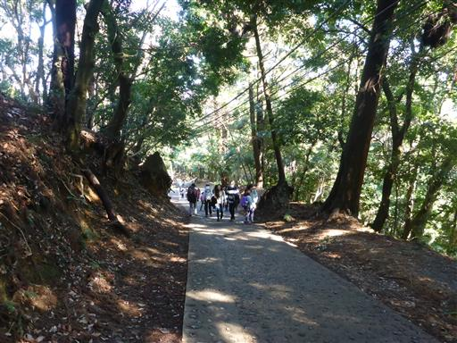
下山。息子は眠そうで、高尾山を登り降りする体力はまだ無さそうだ。
本日一番の目的だったリフトに乗れなかったのが残念だった。
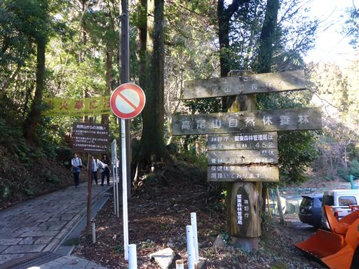